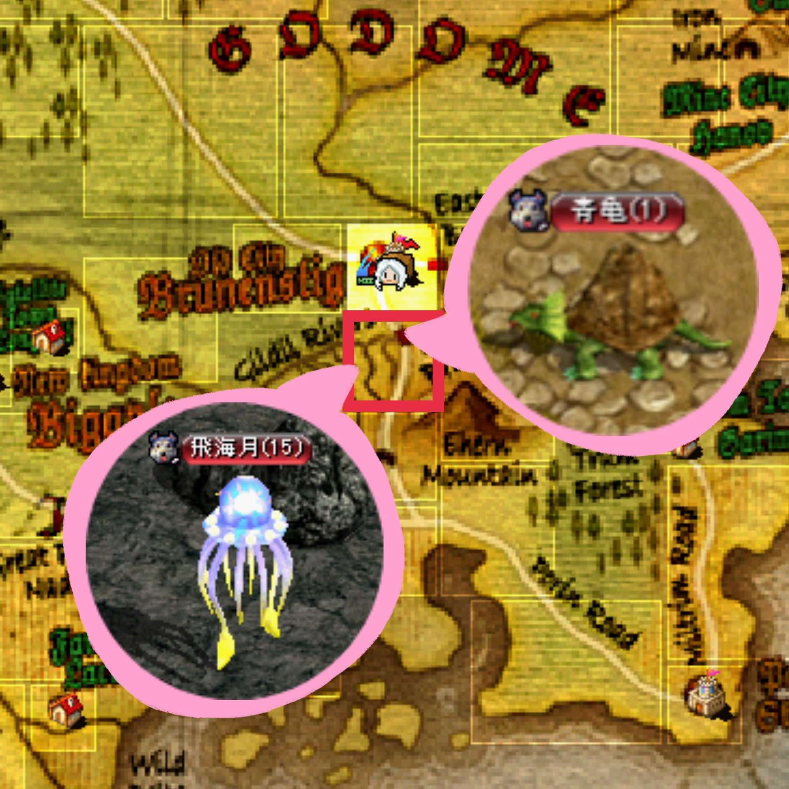
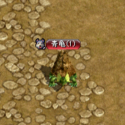
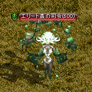
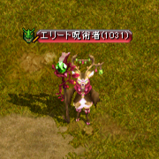

序盤にオススメのペット
お久しぶりです(ﾟдﾟ)！
もうすぐ夏ですね。金鯖ですね。金鯖でぜひテイマをやりましょう！
改変前よりすごく強くなっているので本当にオススメなんですが、ややこしさは相変わらず...というか倍増してます。
ペットも改変前とは全然違うのでなに使ったらいいか難しいです_(:3 」∠ )_
そこで今回は序盤にオススメのペットを改めて紹介していきます！
ここで紹介していないペットもほとんどは改変前より強くなっているので、気になったら色々テイムしてみてね！
テイマをプレイしてみるきっかけ・参考にして頂けたら幸いです😶
カメとクラゲがおすすめ！！


って感じですが本当に強いです！
【カメ】
|  |
黒エンチャと相性がいい！イチ押し！ |
|---|---|
| 生息地 | ギルディル川 / ナス橋付近 ※古都南 |
| 基本攻撃 | 水属性単体 ×2段 |
| 特殊攻撃 | 水属性範囲 ×5段（同時多段） |
【クラゲ】
黒エンチャと相性がいい！イチ押し！
Lv15なのでこちらも割とすぐにテイムできます。
カメと同じく特技の範囲がつよい！範囲も同じく3mくらい。
イチ押しポイントは持続的にダメージを与える特技で、黒エンチャが全段に乗るところ！
火力が心配な人でも協会支援貰っておけば楽に狩れます🙆
 |
序盤では間違いなく最強のペット！ |
|---|---|
| 生息地 | ギルディル川 沼地洞窟 B1 ※古都南の洞窟 |
| 基本攻撃 | 水属性単体 ×2段 |
| 特殊攻撃 | 水属性範囲 ×7段（持続的なやつ） |
【ボーンキメラ】
使用感はカメとほぼ同じ。属性が大地なのが異なる点です。
オマケ程度ですが毒ダメージもついてます。
刺青に大地弱化120%があるおかげで
属性弱化で困る心配が無いのがつよみ！
スウェブタワーB1に5体湧くので、見当たらない時は30分くらい時間をあけてまた探してみてください！
カメと同様に対人でも強い(ﾟдﾟ)！
 |
【ボーンキメラ】 |
|---|---|
| 生息地 | スウェブタワー B1 |
| 基本攻撃 | 大地属性単体 ×2段 |
| 特殊攻撃 | 大地属性範囲 ×5段（同時多段）+毒 |
【森の司令】
特技の段数が非常に多いのが特徴です。範囲は3mくらいで毒ダメもついてます。
段数だけ見ると最強なんですが、
特技が5フレ上限なので3フレのクラゲと比べるとそんなに変わらないです。
（感覚的なところですが、微妙に他より範囲狭いかも...）
時の森3層に5体湧きます！入口辺りで見かけることが多いかも。
ミラーには湧きません。
見当たらない時は30分くらい時間をあけてまた探してみてください！
金鯖だと特にペットの攻撃速度は積むのが大変なため、クラゲよりも司令が使いやすいって人は多いかも！
|  |
【森の司令】 |
|---|---|
| 生息地 | 時の森3層 |
| 基本攻撃 | 大地属性単体 ×2段 |
| 特殊攻撃 | 大地属性範囲 ×13段（持続的なやつ）+毒 |
【呪術者】
見た目が最強！かわいい！！！！
使用感はクラゲとほぼ同じ。属性が風なのが異なる点です。
生命の森中心部に5体湧きます。入口や右上で見かけることが多いかも。
見当たらない時は30分くらい時間をあけてまた探してみてください！
Lvが高いので、早めにテイムしたい場合はネクロの毒舌やリトルの女神でお手伝いしてもらいましょう🙆
覚醒スキル「合奏：爆音」を主軸にして戦う"爆音テイマ"の場合は、爆音と同じ風属性の呪術者はとても相性がいいです。
|  |
【呪術者】 |
|---|---|
| 生息地 | 生命の森中心部 |
| 基本攻撃 | 風属性単体 ×2段 |
| 特殊攻撃 | 風属性範囲 ×7段（持続的なやつ |
さいごに
金鯖の方向けに、知識のスキル振りも一例書いておきます！
スキル振りは
⇒「気まぐれの日」Lv50
⇒「風雨の日」Lv30「教える」Lv30「誉める」Lv30「唐辛子を食べさせる」Lv30
⇒真心の民に覚醒
⇒風雨、教える、誉める、辛子それぞれバランスよく上げてLv50に
⇒覚醒スキル「合奏：爆音」をとる
って流れが良い感じです！
覚醒スキルで注意点があって、「誉める」は覚醒させても上限が上がるだけで倍率はそのままです。
もしスキル装備があんまりないなら「誉める」を覚醒させるのは後回しにしたほうがいいです。
最初はクラゲがオススメ！ぜひお試しください🙆
色々テイムして遊びましょう・。・！
この記事を書いた人
B鯖 つよみん